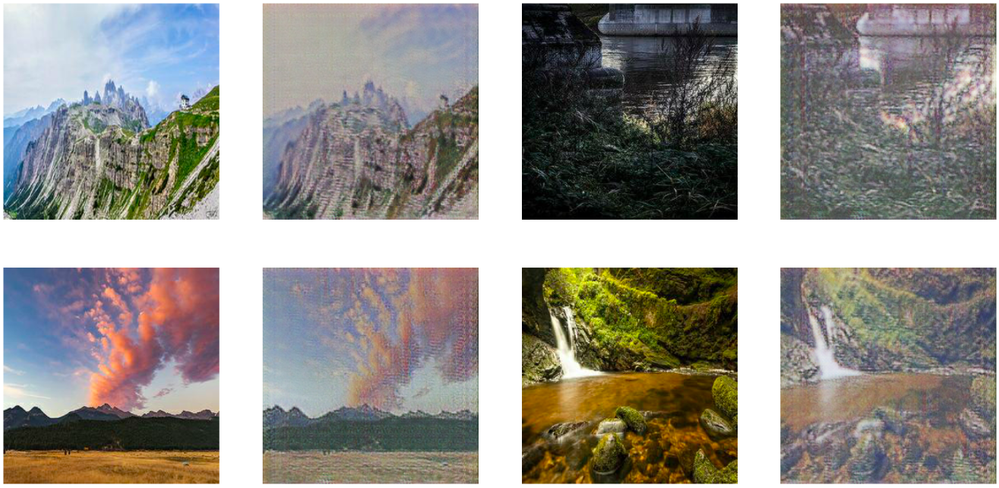

Welcome to my blog. I’m interested in Machine Learning and you can see recent projects I’ve been working on below. To see the code and experiment with them yourself then head to my GitHub profile. If anything interests you and you’d like to reach out then please contact me using the links at the bottom of the page. Happy reading.
Welcome
Sign Language interpreter

An app to read the American Sign Language alphabet. Built using a simple ConvNet in PyTorch. Trained on a new dataset (available below) designed to increase the variability of images. Clone or Download the repo to explore the app yourself.
Read the post | Visit the repo | Download dataset
CycleGAN: paint like Monet

App to convert landscape photos into Monet style paintings using an implementation of CycleGAN in PyTorch. Have a go at converting your own landscape image to Monet-style paintings using an app I built using Heroku and Flask.
Read the post | Visit the repo | Try it out
Wasserstein GANs: create handwritten digits

Model to generate handwritten digits. The PyTorch model is trained on MNIST and is based on a Wasserstein General Adversarial Network with Gradient Penalty (WGAN-GP). Clone or Download the repository to generate your own handwritten digits.
Read the post | Visit the repo